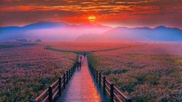

Busan
Busan, South Korea’s vibrant coastal city, boasts Asia’s largest film festival and a maritime culture reflected in its bustling port, the country’s largest. Explore the National Maritime Museum and the oceanside Haedong Yonggungsa Temple. Jagalchi Fish Market offers a seafood haven, while Busan’s diverse landscape includes beautiful beaches like Haeundae and Gwangalli.
It is also known as the international tourist city ( It is home to famous places like Haeundae and Gwangalli Beach.)
Bukchon Hanok Village, Seoul
the essence of the city resides in its Hanok Village, which gets its name from the 800+ meticulously preserved traditional Korean homes.This living museum echoes the melodies of traditional instruments as artisans skillfully craft intricate fans and beautiful pottery.
It is also known as Yangbanchon (aristocrats' village). This history of Bukchon continues to this day, with some residents preserving hanok buildings and renovating their interiors.
Boseong County
The annual Green Tea Festival immerses visitors in tea-picking activities. Daehan Dawon Tourist Plantation, a crown jewel, offers captivating vistas.A visit to this beautiful place in South Korea promises not just a scenic delight but also a serene retreat into the heart of its tea culture. -info about place.
It is also known as the green tea capital of Korea
Nami Island
Named after Minister Nami from the Chosun Dynasty, it gained fame through the iconic Hallyu drama “Winter Sonata.”
Renowned for its picturesque Metasequoia road, woodlands, and riverside walks, Nami Island provides a captivating escape all year round. Its romantic ambience, showcased in various Korean dramas, makes it a must-visit destination.
It is also known as Namseom (whose body is believed to be buried in the pile of stones on the northern hill of Nami Island)
Suncheon
he Suncheon Bay Wetland Reserve, a haven for birdwatchers, features expansive reed fields and breathtaking sunset vistas.The Suncheon Open Film Set immerses visitors in Korea’s past, portraying urban and rural life from the 1950s to the 1970s. Songgwangsa Temple, a revered site, offers spiritual tranquillity amid dense forests.

(Suncheon-si) is the largest city in Jeollanam-do, South Korea.